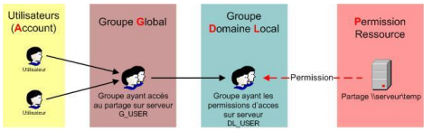
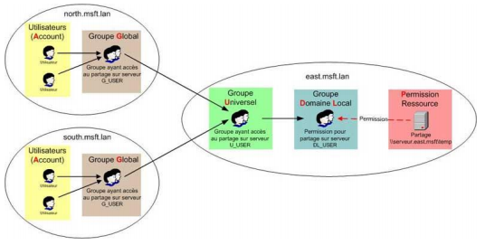
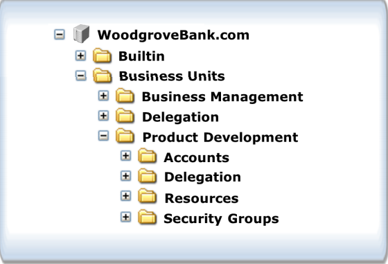
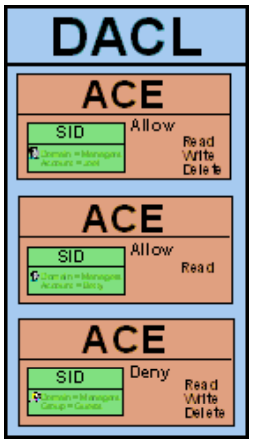

Module 1 : Les bases des Réseaux :
-
Intranet / Extranet / DMZ :
-
Les sous-réseaux et leurs classes :
Le mot sous-réseau a deux significations. Sa signification ancienne mais plus générale est un réseau (Réseau informatique) physique faisant parti d'un réseau plus global (Internet). Au niveau d'IP, un sous-réseau est un sous-ensemble d'un réseau de classe.
L'utilisation de sous-réseau dans un réseau IP permet de diviser un gros réseau unitaire en ce qui apparaît comme plusieurs sous-réseaux. Cette notion a été introduite avant l'arrivée des classes de réseau dans IPv4, pour permettre à un seul site d'avoir un certain nombre de réseaux locaux. Même après l'introduction des classes de réseau, les sous-réseaux restent utiles pour réduire le nombre d'entrées dans la table de routage pour Internet en cachant des informations sur les sous-réseaux individuels d'un site. De plus, cela a permis de réduire la surcharge réseau, en divisant le nombre d'hôtes recevant des appels broadcast IP.
Le préfix réseau : Le groupe de Bits qui définit l'adresse d'un sous-réseau. Ce groupe est commun à tous les hôtes appartenant à ce sous-réseau.
L'identification de l'hôte : Le groupe de Bits restant, défini l'adresse de l'hôte. Ce groupe est distinct pour chaque hôte appartenant au même sous-réseau.
Le masque d'un sous-réseau : Le masque de sous-réseau est un masque indiquant le nombre de Bits utilisés pour identifier le sous-réseau, et le nombre de bits caractérisant les hôtes (ce qui indique aussi le nombre d'hôtes possibles dans ce sous-réseau).
Les classes des sous-réseaux :
Classe Bits les plus significatifs Début Fin Masque par défaut en notation décimale Notation CIDR A 0 1.0.0.0 127.0.0.0 255.0.0.0 /8 B 10 128.0.0.0 191.255.0.0 255.255.0.0 /16 C 110 192.0.0.0 233.255.255.0 255.255.255.0 /24 D 1110 224.0.0.0 239.255.255.0 255.255.255.0 E 1111 240.0.0.0 255.255.255.0 255.255.255.0 -
Réseau Local :
Un réseau local, souvent désigné par l'acronyme anglais LAN de Local Area Network, est un réseau informatique à une échelle géographique relativement restreinte, par exemple une salle informatique, une habitation particulière, un bâtiment ou un site d'entreprise.
Il permet de brancher, dans un rayon limité et sur un seul câble, tous types de terminaux (micro-ordinateur, téléphone, caisse enregistreuse, etc.). Historiquement, le pionnier dans ce domaine est le réseau Ethernet conçu par la société Rank Xerox, puis IBM a lancé son propre système, l'anneau à jeton ou Token Ring dans les années 1980.
C'est toutefois le réseau Ethernet qui s'est imposé, grpace à la simplicité de sa mise en oeuvre et à l'augmentation progressive des débiits de connexion, passés de 10 Mégabits/secondes, puis 100 Mégabits/s, pour atteindre aujourd'hui 1 Gigabits/s et même 10 Gigabits/s sur les réseaux les plus performants.
Adresses IP Réseau/Masque Nombre d'adresses 10.0.0.0 - 10.255.255.255 10.0.0.0/8 16777216 (224) 172.16.0.0 - 172.31.255.255 172.16.0.0/12 1048576 (220) 192.168.0.0 - 192.168.255.255 192.168.0.0/16 65536 (216) Ces sous-réseaux :
-
Peuvent utiliser le TCP/IP sans avoir de clonflit avec les adresses de l'"extérieur".
-
Peuvent attribuer des espaces d'adresses en fonction des besoins de l'entreprise de manière indépendante.
-
Sont protégés de l'"extérieur" car ils ne sont pas connus par Internet.
-
Ne permettent pas aux hôtes de communiquer directement vers l'"extérieur" mais nécessitent l'utilisation d'un proxy ou d'un routeur.
-
Sont indépendants des fournisseurs d'accès.
-
-
Réseau étendu :
Un réseau étendu, souvent désigné par l'anglais Wide Area Network (WAN), est un réseau informatique couvrant une grande zone géographique, typiquement à l'échelle d'un pays, d'un continent, voire de la planète entière. Le plus grand WAN est le réseau Internet.
-
Zone démilitarisée :
Une zone démilitarisée est un sous-réseau (DMZ) isolé par deux pare-feu (firewall). Ce sous-réseau contient des machines se situant entre un réseau interne (LAN - postes clients) et un réseau externe (typiquement, Internet).
La DMZ permet à ces machines d'accéder à Internet et/ou de publier des services sur Internet sous le contrôle du pare-feu externe. En cas de compromission d'une machine de la DMZ, l'accès vers le réseau local est encore contrôlé par le pare-feu interne.

-
-
TCP/IP :
-
Définition du protocole TCP/IP :
Transmission Control Protocol/Internet Protocol. Protocole utilisé sur le réseau Internet pour transmettre des données entre deux postes de travail.
Le protocole de transport, TCP, prend à sa charge l'ouverture et le contrôle de la liaison entre deux stations de travail.
Le protocole d'adressage, IP, assure le routage des paquets de données.
À voir comme un langage universel permettant à deux postes de travail de communiquer entre eux peu importe leur système d'exploitation.
-
Les couches du modèle TCP/IP :

La couche hôte-réseau :
Cette couche est assez "étrange". En efet, elle semble "regrouper" les couches physique et liaison de données du modèle OSI. En fait, cette couche n'a pas vraiment été spécifiée; la seule contrainte de cette couche, c'est de permettre à un hôte d'envoyer des paquets IP sur le réseau. L'implémentation de cette couche est laissée libre. De manière plus concrète, cette implémentation est typique de la technologie utilisée sur le réseau local. Par exemple, beaucoup de réseaux locaux utilisent Ethernet; Ethernet est une implémentation de la couche hôte-réseau.
La couche internet :
Cette couche est la clé de voûte de l'architecture. Cette couche réalise l'interconnexion des réseaux (hétérogènes) distants sans connexion. Son rôle est de permettre l'injection de paquets dans n'importe quel réseau et l'acheminenent de ces paquets indépendamment les uns des autres jusqu'à destination. Comme aucune connexion n'est établie au préalable, les paquets peuvent arriver dans le désordre; le contrôle de l'ordre de remise est éventuellement la tâche des couches supérieures.
Du fait du rôle imminent de cette couche dans l'achemeinement des paquets, le point critique de cette couche est le routage. C'est en ce sens que l'on peut se permettre de comparer cette couche avec la couche réseau du modèle OSI.
La couche internet possède une implémentation officielle : le protocole IP (Internet Protocol).
La couche transport :
Son rôle est le même que celui de la couche transport du modèle OSI : permettre à des entités paires de soutenir une conversation.
Officiement, cette couche n'a que deux implémentations : le protocole TCP (Transmission Control Protocol) et le protocol UDP (User Datagram Protocol). TCP est un protocole fiable, orienté connexion, qui permet l'acheminement sans erreur de paquets issus d'une machien d'un internet à une autre machine du même internet. Son rôle est de fragmenter le message à transmettre de manière à pouvoir le faire passer sur la couche internet. À l'inverse, sur la machine de destination, TCP replace dans l'ordre les fragments transmis sur la couche internet pour reconstruire le message initial. TCP s'occupe également du contrôle de flux de la connexion.
UDP est en revanche un protocole plus simple que TCP : il est non fiable et sans connexion. Son utilisation présuppose que l'on n'a pas besoin ni du contrôle de flux, ni de la conservation de l'ordre de remise des paquets. Par exemple, on l'utilise lorsque la couche application se charge de la remise en ordre des messages. On se souvient que dans le modèle OSI, plusieurs couches ont à charge la vérification de l'ordre de remise des messages. C'est là un avantage du modèle TCP/IP sur le modèle OSI, mais nous y reviendrons plus tard. Une autre utilisation d'UDP : la transmission de la voix. En effet, l'inversion de 2 phonèmes ne gêne en rien la compréhension du message final. De manière plus générale, UDP intervient lorsque le temps de remise des paquets est prédominant.
La couche application :
Contrairement au modèle OSI, c'est la couche immédiatement supérieure à la couche transport, tout simplement parce que les couches présentation et session sont apparues inutiles. On s'est en effet aperçu avec l'usage que les logiciels réseau n'utilisent que très rarement ces 2 couches, et finalement, le modèle OSI dépouillé de ces 2 couches ressemble fortement au modèle TCP/IP.
Cette couche contient tous les protocoles de haut niveau, comme par exemple Telnet, TFTP (Trivial File Transfer Protocol), SMTP (Simple Mail Transfer Protocol), HTTP (HyperText Transfer Protocol). Le point important pour cette couche est le choix du protocole de transport à utiliser. Par exemple, TFTP (surtout utilisé sur réseaux locaux) utilisera UDP, car on part du principe que les liaisons physiques sont suffisamment fiables et les temps de transmission suffisamment courts pour qu'il n'y ait pas d'inversion de paquets à l'arrivée. Ce choix rend TFTP plus rapide que le protocole FTP qui utilise TCP. À l'inverse, SMTP utilise TCP, car pour la remise du courrier électronique, on veut que tous les messages parviennent intégralement et sans erreurs.
-
La Trame TCP/IP :
À titre informatif :

-
Les ports les plus communs :
Les ports à connaître :
-
225 : SSH
-
25 : SMTP
-
80 : HTTP
-
443 : HTTPS
-
3389 : RDP
-
-
-
Domain Name System :
-
Définition du DNS :
Le Domain Name System est un système de nomenclature de type hiérarchique pour les postes de travail, les services ou les ressources connectés à un réseau privé ou à Internet.
Le serveur DNS permet d'associer des adresses IP à des noms d'hôtes, et inversement. Chaque domaine doit être défini dans un serveur DNS. Ces serveurs peuvent être interrogés pour associer un nom d'hôte à une adresse IP ou bien pour récupérer les adresses IP des serveurs de noms associés à un nom de domaine (entre autres requêtes possibles).
-
Comment le DNS fonctionne :
Le fonctionnement du DNS ce base sur le Fully Qualified Domain Name (FQDN) qui permet au travers de la hiérarchie de définir la position de l'hôte dans l'arborescence.

-
Les types d'enregistrements DNS :
Description Type Data Start of Authority SOA Owner Name
Primary Name Server DNS Name, Serial Number
Refresh Interval
Retry Interval
Expire Time
Minimum TTL
Host A Owner Name (Host DNS Name)
Host IP Address
Mail Exchanger MX Owner Name
Mail Exchange Server DNS Name, Preference Number
Canonical Name (an alias) CNAME Owner Name (Alias Name) Host DNS Name
-
Les zones DNS :
Il existe par défaut trois zones DNS :
-
Primaire
-
Secondaire
-
Stub
-
-
Les requêtes DNS :

Il existe de types de requêtes DNS :
-
Les requêtes Récursives
-
Les requêtes Itératives
-
-
-
Dynamic Host Configuration Protcol :
-
Définition du serveur DHCP :
Dynamic Host Configuration Protocol (DHCP) est un terme anglais désignant un protocole réseau dont le rôle est d'assurer la configuration automatique des paramètres TCP/IP d'une station, notamment en lui assignant automatiquement une adresse IP et un masque de sous-réseau, DHCP peut aussi configurer l'adresse de la passerelle par défaut, des serveurs de noms DNS et des serveurs de noms WINS.
-
Pourquoi utiliser le DHCP :
La conception initiale d'IP supposait la préconfiguration de chaque hôte connecté au réseau avec les paramètres TCP/IP adéquats : c'est l'adressage statique. Sur des réseaux de grandes dimensions ou étendues, où des modifications interviennent souvent, l'adressage statique engendre une lourde charge de maintenance et des risques d'erreurs. En outre les adresses assignées ne peuvent être utilisées même si l'ordinateur qui la détient n'est pas en service.
DHCP apporte une solution à ces deux inconvénients :
-
Seuls les ordinateurs en service utilisent une adresse de l'espace d'adressage;
-
Toute modification des paramètres (adresse de la passerelle, des serveurs de noms) est répercutée sur les stations lors du redémarrage
La modification de ces paramètres est centralisée sur les serveurs DHCP.
-
-
Les différents termes du DHCP :
-
Scope : est la plage d'adresses IP que le serveur DHCP va pouvoir attribuer.
-
Lease : est le temps durant lequel l'hôte va pouvoir utiliser l'IP qui lui a été assigné.
-
Reservation : est la réservation d'une adresse IP pour un hôte spécifique.
-
Exclusion : est le fait d'exclure une partie des adresses IP que le serveur peut attribuer.
-
DHCP relay agent : est un service de relais qui va permettre à des hôtes distant de communiquer avec le serveur DHCP.
-
Automatic Private IP Addressing (APIPA) : est le système d'attribution d'IP automatique dans le cas où le serveur DHCP est inexistant (169.254.x.x).
-
-
Comment le DHCP fonctionne :
L'ordinateur équipé de TCP/IP, mais dépourvu d'adresse IP, envoie par diffusion un datagramme (DHCP DISCOVER) qui s'adresse au port 67 de n'importe quel serveur à l'écoute sur ce port. Ce datagramme comporte entre autres l'adresse physique (MAC) du client.
Tout serveur DHCP ayant reçu ce datagramme, s'il est en mesure de proposer une adresse (DHCP OFFER) sur le réseau auquel appartient le client, diffuse une offre DHCP à l'attention du client (sur son port 68), identifié par son adresse physique. Cette offre comporte l'adresse IP du serveur, ainsi que l'adresse IP et le masque de sous-réseau qu'il propose au client. Il se peut que plusieurs offres soient adressées au client.
Le client retient une des offres reçues (la première qui lui parvient), et diffuse sur le réseau un datagramme de requête DHCP (DHCP REQUEST). Ce datagramme comporte l'adresse IP du serveur et celle qui vient d'être proposée au client. Elle a pour effet de demander au serveur choisi l'assignation de cette adresse, l'envoi éventuel des valeurs des paramètres, et d'informer les autres serveurs qui ont fait une offre qu'elle n'a pas été retenue.
Le serveur DHCP choisi élabore un datagramme d'accusé de réception (DHCP ack) qui assigne au client l'adresse IP et son masque de sous-réseau, la durée du bail de cette adresse, deux valeurs T1 et T2 qui déterminent le comportement du client en fin de bail, et éventuellement d'autres paramètres :
-
adresse IP de la passerelle par défaut
-
adresses IP des serveurs DNS
-
addresses IP des serveurs WINS
-
-
Module 2 : Introduction à la gestion d'un environnement Microsoft Windows Server 2008 :
-
Les rôles d'un serveur :
-
Les différentes éditions Windows Server 2008 :
Les différentes éditions à retenir :
-
Windows Server 2008 Standard
-
Windows Server 2008 Enterprise
-
Windows Server 2008 Datacenter
-
Windows Server 2008 Core
-
-
Définition des Rôles :
Les rôles d'un serveur définissent sa fonction primaire et peuvent être de différents type tels que :
-
Serveur d'Annuaire de Services
-
Serveur DNS
-
Serveur de Fichiers
-
Serveur d'Impression
-
Serveur Web
-
...
-
-
Quels sont les rôles d'infrastructure :
Les rôles dédiés à l'infrastructure sont :
-
Active Directory Domain Services
-
Active Directory Certificate Services
-
Active Directory Rights Management Services
-
DHCP Server
-
DNS Server
-
Fax Server
-
File Services
-
Hyper-V
-
Network Policy andAccess Services
-
Print Services
-
Terminal Services
-
Windows Deployment Services
-
-
Quels sont les rôles applicatifs :
Les rôles applicatifs sont :
-
Serveur Applicatif
-
Service UDDI
-
Serveur Web Applicatif
-
-
Quels sont les rôles Active Directory :
Les rôles de l'Annuaire de Services sont :
-
Active Directory Domain Services
-
Active Directory Lightweight Directory Services
-
Active Directory Certificate Services
-
Active Directory Rights Management Services
-
Active Directory Federation Services
-
-
intégration de l'AD DS avec les les autres rôles Active Directory :
Le rôle de l'Annuaire de Services du domaine (Active Directory Domain Services) peut englober les autres rôles de l'Annuaire. Dans la majorité des cas les autres rôles sont dépendant de ce premier.
-
Fonctionnalités d'un serveur Windows 2008 (Features) :
Les Fonctionnalités (ou Features) d'un serveur vont permettre d'installer un service de type applicatif.
Quelques fonctionnalités d'un serveur Windows 2008 :
-
.Net Framework
-
BitLocker Drive Encryption
-
Network Load Balancing
-
Failover Clustering
-
Window PowerShell
-
...
-
-
La version Windows Server 2008 Core :
La version Windows Server 2008 Core a les particularités suivantes :
-
Nombre des rôles/fonctionnalités réduites
-
Pas d'interface graphique
-
Sécurité accrue
-
-
-
Aperçu d'un Active Directory :
-
Défintion d'un Annuaire de Services du domaine :
L'Active Directory est un annuaire au sens informatique et technique chargé de répertorier tout ce qui touche au réseau comme le nom des utilisateurs, des imprimantes, des serveurs, des dossiers partagés, etc. L'utilisateur peut ainsi trouver facilement des ressources partagées, et les administrateurs peuvent contrôler leurs utilisations grâce à des fonctionnalités de distribution, de duplication, de partitionnement et de sécurisation des accès aux ressources répertoriées.
Une arborescence Active Directory est composé de :
-
La forêt : ensemble de tous les sous-domaines Active Directory.
-
L'arbre : domaine et toutes ramifications. Par exemple, dans l'arbre domaine.tld, sous1.domaine.tld, sous2.domaine.tld et photo.sous1.domaine.tld sont des sous-domaines de domaine.tld.
-
Le domaine : constitue les feuilles de l'arborescence. photo.sous1.domaine.tld peut-être un domaine au même titre que domaine.tld.
-
-
Les avantages de l'Active Directory :
Les avantages d'utiliser un Annuaire de Services sont :
-
Simplification de la gestion de la sécurité
-
Stockage récurrent des informations
-
Utilisation des Stratégies de Groupes
-
Extensibilité
-
Délégation de l'administration
-
-
Définition d'un Domaine :
Chez Microsoft, un domaine est une entité logique vue comme une enveloppe étiquetée. Il reflète le plus souvent une organisation hiérarchique dans une entreprise. Par exemple, le domaine "COMPTA" désigne l'ensemble des machines réseau (stations, imprimantes, ...) du service Comptabilité, et les comptes utilisateurs qui sont autorisés à s'y connecter.
Le domaine permet à l'administrateur réseau de gérer plus efficacement les utilisateurs des stations déployées au sein de l'entreprise car toutes ces informations sont centralisées dans une même base de données.
Cette base de données est stockée sur des serveurs particuliers (Windows Server NT4, 2000, 2003, 2008, 2008R2), appelés Contrôleurs de Domaine (Domain Controller, en anglais).

-
Définition d'une unité organisationnelle (Organizational Unit OU) :
Une Unité organisationnelle (Organizational Units; OU; UO) est un objet qui permet de hiérarchiser l'Active Directory. L'Active Directory permet une hiérarchisation des domaines. À l'intérieur de ces domaines, il existe mainteant des possibilités de structuration et de hiérarchisation des utilisateurs.
Les OU sont le meilleur moyen de créer ces structures hiérarchiques dans Active Directory. Outre la structuration d'informations, qui offre une clarté accrue dans les annuaires complexes notamment, les OU présentent un avantage important : elles tiennent lieu de frontière pour la délégation d'autorisations administratives. Il est donc possible de personnaliser les droits des différents utilisateurs/groupes de façon ciblée (gestion des mots de passe; droit d'accès : autorisations concernant les installations...).
-
Définition d'une Forêt :
Quand vous créez le premier contrôleu de domaine de votre organisation, vous créez le premier domaine (ou domaine racine de la forêt) et la première forêt de celle-ci.
Le conteneur Active Directory situé au niveau supérieur est appelé une "forêt". Une forêt se compose d'un ou de plusieurs domaines ayant en commun un schéma et un catalogue global.
Une forêt est une limite de sécurité et d'administration pour tous les objets qu'elle contient. Un domaine est une limite d'administration destinée à faciliter la gestion d'objets tels qu'utilisateurs, groupes et ordinateur. De plus, chaque domaine applique ses propres stratégies de sécurité et relations d'approbation avec les autres domaines.
Plusieurs arborescences de domaine d'une même forêt ne constituent pas un espace de noms contigu : leurs noms de domaine DNS ne sont pas contigus. Si les arborescences d'une forêt ne partagent pas le même espace de noms, en revanche, chaque forêt comporte un seul et unique domaine racine, appelé "domaine racine de forêt". Celui-ci est, par définition, le premier domaine créé dans la forêt. Les groupes Administateurs de l'entreprise et Administrateurs du schéma sont situés dans ce domaine. Par défaut, les informations d'identification d'administration de leurs membres sont à l'échelle de la forêt.
-
Définition d'un Contrôleur de Domaine :
Le Contrôleur de Domaine (Domain Controller) est l'entité physique qui va héberger et gérer l'Annuaire de Services du Domaine (Active Directory Domaine Service) sous forme d'une base de données...
-
Définition d'un Contrôleur de Domaine en Lecture Seule (Read Only Domain Controller RODC) :
Un contrôleur de domaine en lecture seule (RODC) est un nouveau type de contrôleur de domaine du système d'exploitation Windows Server 2008. Il permet aux organisations de déployer facilement un contrôleur de domaine à des emplacements où la sécurité physique ne peut être garantie. Il héberge des partitions en lecture seule de la base de données des services de domaine Active Directory (AD DS).
-
Les Fonctionnalités d'un Contrôleur de Domaine en Lecture Seule :
Les contrôleurs de domaine en lecture seule résolvent certains des problèmes qui sont fréquemment rencontrés dans les succursales. Ces emplacements peuvent être dépourvus de contrôleur de domaine. Sinon, ils peuvent avoir un contrôleur de domaine. Sinon, ils peuvent avoir un contrôleur de domaine accessible en écriture, mais sans la sécurité physique, la bande passante réseau ou les compoétences locales nécessaires à sa prise en charge. Les fonctionnalités suivantes des contrôleurs de domaine en lecture seule atténuent ces problèmes :
-
Base de données AD DS en lecture seule
-
Réplication unidirectionnelle
-
Mise en cache des informations d'identification
-
Séparation des rôles d'administrateur
-
Serveur DNS (Domain Name System) en lecture seule
-
-
Module 3 : Création des objets de l'Annuaire de Services :
-
Gestion des comptes utilisateurs :
-
Définition d'un compte utilisateur :
Un compte utilisateur de domaine est un objet utilisateur défini au niveau de l'Annuaire de Services. C'est un compte classique appartenant au domaine et non pas uniquement à la base d'authentification locale du poste de travail. Il permet l'authentification et l'accès a des ressources locales et réseaux.
Les avantages de ce type de comptes :
-
Centralisation des comptes pour l'administration
-
Permet de dissocier l'utilisateur de son poste de travail
-
L'utilisateur peut utiliser le même compte sur plusieurs postes de travail différents.
-
-
Les noms associés avec les comptes utilisateurs de l'Annuaire :
Afin de s'authentifier à l'Annuaire de Services, il existe plsueirus façons de procéder :
-
User Logon Name : NomUtilisateur (ex. Gregory)
-
User Logon Name (pre-Windows 2000) : NomDeDomaineNomUtilisateur (ex. WS2K8LABGregory)
-
User Principal Name (UPN) : NomUtilisateur@NomDuDoamineFQDN (ex. gregory@ws2k8lab.priv)
-
-
-
Création des comptes des stations de travail :
-
Définition d'un compte de station de travail :
Un compte ordinateur de domaine est un objet ordinateur défini au niveau de l'Annuaire de Services. Il va également donner la possibilité d'utiliser des stratégies de groupes sur ces mêmes postes.
-
Module 4 : Création des Groupes et Unités Organisationnelles :
-
Introduction aux Groupes :
-
Définition des Groupes :
Les groupes sont une collection d'objets, de l'annuaire, similaires de types :
-
Utilisateur
-
Ordinateur
-
Autre groupe
Il existe deux types de groupe :
-
Groupe de distribution : Il s'agit d'une implémentation pour les serveurs de mail (par exemple : Microsoft Exchange Server) pour pouvoir envoyer des mails à un groupe d'utilisateur. Il est limité à cette tâche et ne permettent aucune autre action.
-
Groupe de sécurtité : Les groupes de sécurité permettent deux types de droits qui doivent se corréler entre eux :
-
Assigner des droits utilisateurs et assigner des autorisations sur des ressources.
-
Il permet aussi l'envoi de mail au groupe (comme les groupes de distribution).
-
Qu'il s'agisse d'un groupe de sécurité ou d'un groupe de distribution, tout groupe est caractérisé par une étendue qui délimite son application dans l'arborescence de domaine ou dans la forêt. La limite d'une étendue de groupe est également déterminée par le paramètre de niveau fonctionnel du domaine qui lui est associé. Il existe trois étendues de groupe : universelle, globale et domaine local.
-
-
Les niveaux fonctionnels d'un Domaine :
-
Windows Server 2000 Mixte
-
Windows Server 2000 Natif
-
Windows Server 2003 Intérim
-
Windows Server 2003 Natif
-
Windows Server 2008
-
Windows Server 2008 R2
-
-
Étendue des Groupes Globaux (Global Groups GG) :
Étendue du groupe Le groupe peut inclure comme membres.. Le groupe peut recevoir des autorisations dans... L'étendue du groupe peut être convertie en... Globale. Comptes du même domaine en tant que groupe global parent. Les autorisations des membres peuvent être attribuées dans tout domaine. Universelle (s'il ne s'agit pas d'un membre de tout autre groupe global). Groupes globaux du même domaine en tant que groupe global parent. -
Étendue des Groupes Universelles (Universal Groups UG) :
Étendue du groupe Le groupe peut inclure comme membres.. Le groupe peut recevoir des autorisations dans... L'étendue du groupe peut être convertie en... Universelle. Comptes de tout domaine de la forêt où réside ce groupe universel. Tout domaine ou forêt. Domaine local. Groupes globaux de tout domaine de la forêt où réside le groupe universel. Global (si aucun groupe universel n'existe en tant que membres). Groupes universels de tout domaine de la forêt où réside le groupe universel. -
Étendue des Groupes Domaine Locaux (Domain Local Groups DL) :
Étendue du groupe Le groupe peut inclure comme membres.. Le groupe peut recevoir des autorisations dans... L'étendue du groupe peut être convertie en... Domaine local. Les autorisations des membres peuvent être attribuées dans le même domaine que le groupe local parent. Universelle (si aucun autre groupe local n'existe en tant que membre). Groupes globaux de tout domaine. Groupes universels de tout domaine. Groupes locaux du même domaine que le groupe local parent. -
L'usage des Groupes :
Quand utiliser des groupes avec une étendue de domaine local ?
Les groupes avec une étendue de domaine local vous aident à définir et à gérer l'accès aux ressources à l'intérieur d'un domaine unique. Par exemple, pour permettre à cinq utilisateurs d'accéder à une imprimante spécifique, vous pouvez ajouter les cinq comptes d'utilisateur à la liste d'autorisations de l'imprimante. Cependant, si vous souhaitez ensuite autoriser les utilisateurs à accéder à une nouvelle imprimante, vous êtes obligé de placer à nouveau les cinq comptes d'utilisateur dans la liste d'autorisations de la nouvelle imprimante.
Avec un minimum de planification, vous pouvez simplifier cette tâche d'administration en créant un groupe avec une étendue de domaine local et l'autoriser à accéder à l'imprimante. Placez les cinq comptes d'utilisateur dans un groupe ayant une étendue globale et ajoutez ce groupe à celui qui a une étendue de domaine local. Si vous souhaitez autoriser les cinq utilisateurs à accéder à la nouvelle imprimante, attribuez une autorisation d'accès au groupe qui a une étendue de domaine local. Tous les membres du groupe qui a une étendue globale accèdent automatiquement à la nouvelle imprimante.
Quand utiliser des groupes avec une étendue globale ?
Utilisez des groupes avec une étendue globale pour gérer des objets annuaire qui nécessitent une maintenance quotidienne, tels que les comptes d'utilisateurs et d'ordinateurs. Comme les groupes qui ont une étendue globale ne sont pas répliqués à l'extérieur de leur propre domaine, les comptes situés dans un groupe qui a une étendue globale peuvent être modifiés régulièrement sans provoquer un trafic de réplication sur le catalogue global. Pour plus d'informations sur les groupes et la réplication, voir Mode de fonctionnement de la réplication.
Même si l'attribution de droits et d'autorisations n'est valide qu'à l'intérieur du domaine où elle est effectuée, en appliquant des groupes avec une étendue globale de manière homogènes sur les domaines appropriés, vous pouvez consolider les références aux comptes qui ont des objectifs similaires. Ceci permet de simplifier de rationaliser la gestion des groupes à travers les domaines. Par exemple, dans un réseau qui comporte deux domaines, Europe et États-Unis, s'il existe un groupe avec une étendue globale nommé ComptabilitéGL dans le domaine États-Unis, il doit également exister un groupe appelé ComptabilitéGL dans le domaine Europe (sauf si la fonction comptabilité n'existe pas dans le domaine Europe).
Il est fortement recommandé d'utiliser des groupes globaux ou universels au lieu de groupes de domaine local lorsque vous définissez des autorisations pour des objets d'annuaire du domaine répliqués sur le catalogue global. Pour plus d'informations, voir Réplication du catalogue global.
Quand utiliser des groupes avec une étendue universelle ?
Par exemple, dans un réseau qui comporte deux domaines, Europe et États-Unis, et groupe d'étendue globale appelé ComptabilitéGL dans chaque domaine, créez un groupe avec une étendue universelle appelé ComptabilitéU, qui aura comme membres les deux groupes ComptabilitéGL, ÉtatsUnisComptabilitéGL et EuropeComptabilitéGL. Le groupe ComptabilitéU peut ensuite être utilisé n'importe où dans l'entreprise. Les modifications apportées à l'appartenance aux groupes ComptabilitéGL individuels ne provoqueront pas la réplication du groupe ComptabilitéU.
L'appartenance à un groupe d'étendue universelle ne doit pas être modifiée fréquemment. En effet, toute modification apportée à ces appartenances de groupe provoque la réplication de toute l'appartenance du groupe sur chaque catalogue global de la forêt. Pour plus d'informations sur la réplication et les groupes universels, voir Sites et catalogues globaux.
-
L'imbrication de Groupes (Group Nesting) :
L'imbrication vous permet d'ajouter un groupe en tant que membre d'un autre groupe. Vous imbriquez des groupes pour consolider les comptes membres et réduire le trafic de réplication.
-
Stratégies d'imbrication de Groupes (Group Nesting Strategie) :
Pour une bonne gestion des autorisations sur des objets Active Directory, il faut utiliser à bon escient les groupes. Ceci dans le but de dissocier et de prévenir tous problèmes futures, il faut acquérir l'habitude suivante : un objet ou entité d'objet dans un domaine doit posséder un groupe local pour attribuer les autorisations sur cet objet ou entité.
Par exemple : je possède une imprimante qui se nomme "printercouloir" et je veux associer un nombre d'utilisateur restreint et spécifique à cette imprimante. Il faut alors créer un groupe "dl_printercouloir" (groupe de sécurité avec une étendue locale). Ajouter les membres à celle-ci et attribuer les autorisations pour l'imprimante au nouveau groupe ainsi créé.
Appliquer cette stratégie peut être fastidieux au début mais le gain en maintenance sera conséquent. Par exemple, un an plus tard, une nouvelle imprimante "printercouloir2" est ajoutée et vous souhaitez que seuls les utilisateurs qui avient déjà accès à l'imprimante "printercouloir" y aient accès. Très simplement, vous n'aurez à donner que des autorisations au groupe "dl_printercouloir". Si vous aviez donné des autorisations nominativement auparavant, il aurait fallu reprendre chaque membre un par un et donnez des autorisations à chacun.
Ci-dessus a été explicité une partie de la stratégie A G DL P (Account, Global group, Domain Local group, Permission) et A G U DL P (Account, Global group, Universal group, Domain Local group, Permission).
AGDLP :
Ce type de stratégie est très efficace seulement dans un domaine restreint (pas de notion de forêt).
Les tâches à suivre :
-
Ajoutez les utilisateurs dans des groupes de sécurité avec une étendue globale.
-
Ajoutez les groupes globaux à un groupe de sécurité avec une étendue locale qui sera réservée aux permissions de l'objet ou d'une entité d'objet.
-
Ajoutez les autorisations pour le ou les objets au groupe domaine local précédemment créé.
AGUDLP :
Voici la méthode à retenir si vous possédez une forêt Active Directory :
Les tâches à suivre :
-
Ajoutez les utilisateurs dans des groupes de sécurité avec une étendue globale dans chaque domaine où se situe l'utilisateur.
-
Ajoutez les groupes globaux à un groupe de sécurité avec une étendue universelle (ceci pour limiter le traffic lors de la réplication de la forêt Active Directory si vous effectuez des modifications de permission).
-
Ajoutez le ou les groupes universels à un groupe de sécurité avec une étendue locale qui sera réservée aux permissions de l'objet ou d'une entité d'objet.
-
Ajoutez les permissions pour le ou les objets au groupe local précédemment créé.
-
-
Groupes Membre et Membre de :
Afin d'identifier l'appartenance d'un groupe, il existe deux onglets dans les proprités du groupe :
-
Membre qui définit les membres (objets) appartenant à ce groupe.
-
Membre de qui définir à quels autres il appartient.
-
-
-
Création des Unités Organisationnelles :
-
Définition de la Hiérarchie d'une Unité Organisationnelle :
Les Unités Organisationnelles (OU) ont la particularité de pouvoir être créer de manière hiérarchique afin de facilité l'administration de celles-ci.
-
Exemples d'hiérarchies :
Example Benefit Geographic OUs -
Can be administered at the location level
Departmental OUs -
Delegation by job function
Resource OUs -
Designed to manage resource (nonuser) objects
By management -
Build OUs around the administration of the business
-
-
Résumé des UO et des Groups :
OU Groupe Vous pouvez appliquer directement une GPO sur une OU. Vous ne pouvez pas appliquer directement une GPO sur un groupe. Un utilisateur ne peut appartenir que à une seule OU à la fois. Un utilisateur peut appartenir à plusieurs groupes simultanément. Vous ne pouvez pas utiliser une OU pour attribuer ou refuser des permissions à des ressources. Les groupes sont utilisés pour autoriser ou refuser les permissions aux ressources. Vous ne pouvez pas utiliser une OU pour distribuer du courrier e-mail. Vous pouvez utiliser les groupes afin d'envoyer du courrier e-mail.
-
Module 5 : Gestion des Accès aux ressources dans l'Annuaire :
-
Les contrôles d'accès :
SID (Security IDentifier) : chaque objet entité de sécurité (utilisateur, groupe et ordinateur) aura un identificateur de sécurité qui sera unique dans une forêt Active Directory. Cet identificateur est automatiquement créé lors de la création de l'entité de sécurité. Ce numéro unique est composé du SID du domaine + d'un RID défini par la maître RID du domaine.
ACE (Access Control Entrie) : un ACE est un couple : un SID et une permission.
DACL (Discretionary Access Control List) : c'est une liste d'ACE pour un objet. C'est grâce à celle-ci qu'on autorise ou non une entité de sécurité. Toute entité de sécurité non listé dans cette DACL aura de suite un accès refusé.
SACL (System Access Control Lists) : cette liste d'ACE est particulière et très peu utilisé. Elle permet d'auditer un certain nombre d'événements (sécurité, réseau) sur l'objet d'une ou plusieurs entités. On pourra ainsi déterminer les violations d'accès ainsi que son étendue qu'on souhaite auditer.
-
Défintion des Jetons d'accès (Access Tokens) :
Un jeton d'accès ou jeton de sécurité identifie le contexte de sécurité d'un processus ou plus précisément d'un thread.
Pendant l'ouverture de session interactive/non-interactive, un jeton de sécurité est créé pour représenter l'utilisateur qui se connecte.
Tous les programmes qu'exécute l'utilisateur héritent d'une copie de ce jeton initial.
-
-
Gestion des permissions de fichiers et répertoires NTFS :
-
Définition des permissions NTFS :
Vous pouvez contrôler l'accès aux répertoires et fichiers en définissant les autorisations d'accès NTFS. Ces autorisations permettent de définir le niveau d'accès que vous souhaitez accorder à des utilisateurs ou groupes d'utilisateurs spécifiques. Pour empêcher tout accès non autorisé à vos ressources, il est fondamental de configurer correctement les autorisations relatives aux fichiers et répertoires.
Permissions des Fichiers Permissions des Répertoires Read Read Write Write Read & Execute List Folder Contents Modify Read & Execute Full Control Modify Full Control -
Définition de l'héritage des permissions :
L'héritage des permissions est utilisé afin de facilité les tâches administratives et d'éviter de devoir attribuer des permissions à chaque objet indépendamment. La relation de l'héritage est de type parent/enfant.
-
Altération des permissions NTFS lors d'une copie ou d'un déplacement :
Moving within a partition. Does not create a new file - simply updates location in directory. File keeps its original permissions. Moving across a partition. Creates a new file and deletes the old one. Inherits the target folders permissions. Copying within a partition. Creates a new file which inherits permissions of target folder.
-
-
Attribuer des permissions aux ressources partagées :
-
Définition d'un répertoire partagé :
Un répertoire partagé est un répertoire qui permet l'accès à son contenu au travers du réseau de l'entreprise.
Les fichiers ne peuvent pas être partagés directement mais doivent faire partie d'un répertoire partagé afin de pouvoir y accéder au travers du réseau de l'entreprise.
-
Définition des répertoires partagés Administratifs :
Les répertoires partagés Administratifs sont des répertoires partagés caché. Ils facilitent l'administration ainsi que l'intégration avec l'Annuaire de Services.
-
Les permissions des répertoires partagés :
Permission Level Access Read -
Allows for viewing of data in files
-
Allows for subfolder browsing
-
Programs in the shared folder can be executed
-
By defaut, applied to the Everyone group
Change -
All the permissions in the Read category
-
New files and subfolders can be created
-
Data in existing files can be modified or removed
-
Files and subfolders can be deleted
Full Control -
Full permissions included in the Read and Change categories plus permission to change security settings
-
-
Les moyens de connexion à un répertoire partagé :
Il existe plusieurs manières de se connecter à un répertoire partagé.
Les deux plus utilisés sont :
-
L'accès direct au tavers du réseau (\\nomduserveurnomdupartage).
-
L'accès au travers d'un "mapped" drive, ce qui veux dire que l'on va attribuer une lettre de partition à un partage réseaux. Ce mapped drive sera accessible tels que n'importe quel autre partition du système.
-
-
-
Détermination des permissions effectives :
-
Définition des permissions effectives :
-
Les permissions NTFS sont cumulatives (La permission Write englobe la permission Read etc.).
-
La permission Deny l'emporte sur les autres permissions.
-
Les permissions peuvent être appliquées à des utilisateurs ou à des groupes.
-
Les permissions sur les fichiers passent outre les permissions des répertoires.
-
Le créateur des fichiers/répertoires et le propriétaire de ces fichiers/répertoires.
-
-
Les effets de la combinaison des permissions NTFS et des permissions des répertoires partagés :
Quand l'on combine les permissions NTFS et de partage c'est les permissions les plus restrictives qui l'emportent.
Il faut impérativement correctement définir les deux types de permissions afin de donner à l'utilisateur les droits désirés. Dans le cas contraire, l'utilisateur se verra refuser l'accès à ces ressources.
-
Module 6 : Création et Configuration des Stratégies Groupes :
-
Introduction aux Stratégies de Groupes (Group Policy Object GPO) :
-
Définition de la Gestion de la Configuration :
La gestion de la configuration est un principe qui consiste à centraliser l'approche administrative de la gestion d'un environnement. Nous allons regrouper les utilisateurs et les ordinateurs afin de leurs appliquer des modifications de manière centralisée et globale sans devoir traiter chaque objet indépendamment.
-
Setting : est le paramètre d'une GPO qui va définir une configuration.
-
Scope : est l'étendue (champ d'action sur les groupes et ordinateurs) d'une GPO.
-
Application : est le mécanisme d'application de la GPO aux utilisateurs/ordinateurs.
-
Group Policy : est le conteneur des trois définitions citées ci-dessus.
-
-
Définition d'une Stratégie de Groupe (Group Policy Object GPO) :
Le terme Stratégie désigne la configuration logicielle du système par rapport aux utilisateurs.
Les stratégies de groupe ou GPO (Group Policies Object) permettent de configurer des restrictions d'utilisation de Windows où des paramètres à appliquer soit sur un ordinateur donné soit sur un compte utilisateur donné. Il est ainsi possible d'agir sur :
-
La définition d'un environnement adapté : Il est possible par exemple de rediriger certains répertoires leurs contenus.
-
Le déploiement de logiciels : Une automatisation complète de l'installation des programmes sur les postes clients est possible en fonction du profil de l'utilisateur.
-
L'application des paramètres de sécurité : Le contexte de sécurité de l'environnement utilisateur peut être modifié.
Voici un exemple de stratégie de groupe :
-
Menu Démarrer et Barre des tâches :
-
Suppression du menu Documents dans le Démarrer
-
Suppression des Connexions réseau et accès distant du menu Démarrer
-
Suppression du menu Exécuter dans le menu Démarrer
-
Désactivation de la fermeture de session dans le menu Démarrer
-
Désactivation de la commande Arrêter
-
-
Panneau de configuration :
-
Désactivation du Panneau de configuration
-
Masque de certaines applications du Panneau de configuration
-
-
Système :
-
Activation des quotas de disque
-
Désactivation des outils de modifications du Registre
-
Désactivation de l'invite de commandes
-
-
Internet Explorer :
-
Désactivation de la modification des paramètres de la page de démarrage
-
Une stratégie de groupe et composée d'un objet Active Directory et d'un dossier dont le nom est le SID de la GPO et que l'on trouve dans le répertoire SYSVOL disponible sur chaque contrôleur de domaine. Les GPO ne peuvent être appliquées qu'à des conteneurs : site, domaine ou encore unité d'organisation mais elles peuvent être assignées plusieurs fois à des conteneurs différents. Le contenu d'une GPO sera donc appliqué sur les comptes utilisateurs et ordinateurs contenus dans le conteneur et plusieurs GPO peuvent être liée à un même conteneur.
-
-
Les Stratégies de Groupes par défaut :
Lors de la création d'un domaine, il y a deux GPO qui sont créées par défaut :
-
Domain Group Policy Object : celle-ci s'applique à l'entièreté des utilisateurs/ordinateurs du domaine.
-
Domain Controller Group Policy Object : celle-ci s'applique uniquement aux contrôleurs de domaine.
-
-
Le champ d'application d'une GPO :
Le champ d'application d'une GPO est dépendant de plusieurs paramètres :
-
Scope : est la définition des objets contenus dans l'OU sur laquelle la GPO est appliquée.
-
GPO link : est le lien qui se crée entre la GPO et l'OU. Tant que ce lien n'existe pas, la GPO ne sera pas appliquée à l'OU.
-
Security group filtering : nous permet de définir l'application de la GPO de manière plus granulaire au niveau des groupes et utilisateurs (autoriser ou pas l'application d'une GPO sur un utilisateur/ordinateur appartenant à une OU).
-
-
Rafraîchissement des GPO :
Un ordinateur vérifie qu'il utilise la dernière version des GPO toutes les 90 minutes environ (plus ou moins 30 minutes déterminées de façon aléatoire) afin d'éviter que plusieurs ordinateurs fassent des requêtes au contrôleur de domaine en même temps.
En ce qui concerne les contrôleurs de domaines, ils sont réactualisés toutes les 5 minutes. Ce paramètre est configurable dans la GPO elle-même. Vous pouvez forcer le rafraîchissement sur chaque ordinateur en utilisant la commande suivante : gupdate /force.
-
Le résultat d'une GPO (RSoP) :
Le Resultant Set of Policy (RSoP) est le résultat final de l'application des différentes GPO sur un utilisateur/ordinateur.
Étant donné que dans une OU nous pouvons appliquer plusieurs GPO, il est important de savoir quels sont les paramètres finaux qui seront appliqués.
Il existe, pour ce faire, plusieurs outils afin de déterminer le paramètre final effectif de la GPO.
-
-
Implémentation des GPO :
-
Les GPO Locales :
Les GPO locales sont appliquées avant les GPO du domaine, ce qui implique que les GPO du domaine écrasent les paramètres de la GPO locale.
Dans les versions Windows 2000/XP/2003, il n'existe qu'une seule GPO locale.
Dans les versions Vista/7/2008/2008R2, il existe quatre GPO locales :
-
Local GPO
-
Administrators GPO
-
Non-Administrators GPO
-
Per-user GPO
-
-
Les GPO du Domaine :
Les GPO du domaine sont créées au niveau de l'Annuaire de Services et sont stockées sur le contrôleur de domaine sous le répertoire SYSVOL.
Il existe par défaut deux GPO du domaine :
-
Domain GPO
-
Domain Controller GPO
-
-
Création, liaison et édition des GPO :
Les manipulations de base d'une GPO sont :
-
Création : Lors de la création de la GPO, un nouvel objet va être créé dans l'annuaire de services et va être stocké dans le répertoire SYSVOL du système et ce sur tous les contrôleurs du domaine.
-
Liaison : Consiste à lier une GPO a un domaine ou une OU afin que celle-ci y soit appliquée.
-
Édition : Consiste à configurer les différents paramètres que nous voulons appliquer au travers de cette GPO.
-
-
L'héritage des GPO et leur précédence :
L'ordre dans lequel les objets GPO sont appliqués dépend du conteneur Active Directeur auquel sont liés les objets. Ils sont hérités et appliqués dans l'ordre suivant : local, au site, au domaine puis à l'unité organisationnelle (Local → Site → Domain → OU → OU etc.).
Chaque paramètre d'une GPO peut être configuré ou non, s'il n'est pas configuré, un paramètre ne provoque pas de conflit. Cependant, si des paramètres configurés entrent en conflit, l'échelle de priorité précédente détermine le paramètre à appliquer. Lorsque plusieurs GPO sont appliquées sur une OU, la GPO la plus élevée (la première) est la plus prioritaire, et la dernière est la moins prioritaire.
En cas de conflit dans la configuration des GPO de différents niveaux, par défaut, on appliquera le paramètre de la GPO la plus proche de l'objet. Voici les règles applicables par défaut :
-
Dans le cas d'un domaine, les GPO appliquées à celui-ci sont héritées du domaine père en domaines fils.
-
Dans le cas d'une Unité Organisationnnelle, les GPO appliquées à celle-ci sont héritées d'une unité organisationnelle mère en unités organisationnelles filles.
Il existe néanmoins des exceptions, dans la mesure où, pour chaque contenur (OU ou domaine), les deux options suivantes sont configurables :
-
Bloquer l'héritage : Lorsque cette case est cochée, aucune GPO supérieure ne sera héritée par le conteneur en question.
-
Ne pas passer outre : Cette exception va empêcher qu'une GPO plus projet de l'objet utilisateur ou ordinateur ne prime sur une GPO plus éloignée.
Dans la mesure où ils sont définis une seule fois pour tout le domaine dans la première GPO, certains paramètres font exception à l'ordre d'application et aux possibilités d'héritage : c'est le cas des paramètres de mots de passe et ceux de verrouillage de compte. Si ces derniers sont définis à un autre emplacement, ils n'auront aucun effet.
-
-
Systèmes déconnectés :
Dans le cas où un ordinateur du domaine a été déconnecté, il appliquera la dernière GPO gardée en mémoire. Aussitôt qu'il se reconnectera, il recevra la mise à jour des GPO du domaine.
-
Compréhension de l'application effective d'un paramètre :
L'application effective d'un paramètre peut prendre effet dès lors que :
-
Une réplication des GPO se fait entre l'ordinateur et le domaine.
-
Lors d'un logon/logoff d'un utilisateur.
-
Lors d'un redémarrage de l'ordinateur.
-
Lors d'une mise à jour manuelle.
-
-
Les Commandes de Microsoft Windows Server 2008 Core :
-
Les commandes réseau :
-
Changer le nom de l'ordinateur :
La commande utilisée pour changer le nom de l'hôte est :
netdom renamecomputer NomActuel /newname :NouveauNomEx. : netdom renamecomputer TOTO /newname :TATA
-
Changer l'adresse IP :
La commande utilisée pour définir une adresse IP est :
netsh interface ipv4 set address NomDeLInterface static AdresseIP Masque PasserelleEx. : netsh interface ipv4 set address "Connexion au réseau locale" static 192.168.152.50 255.255.255.0 192.168.152.2
-
Changer le serveur DNS :
La commande utilisée pour définir un serveur DNS est :
netsh interface ipv4 add dnsserver name=NomDeLInterface address=AdresseIPDuServeurDNSEx. : netsh interface ipv4 add dnsserver name="Connexion au réseau locale" address=192.168.152.10
-
Rejoindre un domaine :
La commande utilisée pour rejoindre un domaine est :
netdom join NomDeLOrdinateur /domain:NomDuDomaine /userD:UtilisateurDuDomaine /passwordD:MotDePasseUtilisateurEx. : netdom join TATA /domain:WS2K8LAB.PRIV /userD:Adminsitrator /passwordD:P@ssw0rd
-
Activer/Désactiver le pare-feu :
La commande utilisée pour activer/désactiver le pare-feu est :
netsh advfirewall set NomDuProfil state ON|OFFEx. : netsh advfirewall set all state off
-
Activer le bureau à distance :
La commande utilisée pour activer le bureau à distance est :
cscript c:\windows\system32\scregedit.wsf /ar 0
-
-
La commande DCPROMO :
La commande DCPROMO est utilisée afin de promouvoir un serveur au rang de contrôleur de domaine. Cela implique une copie de l'Annuaire de services dans sa base locale.
Sur une version Windows Core, il est possible d'utiliser cette commande de deux manières différentes :
-
Via un fichier qui contiendra les paramètres de la commande (dcpromo /unattend :nomdufichier).
-
Directement spécifier les paramètres via la ligne de commande.
Voici un exemple d'un fichier DCPROMO :
[DCINSTALL] UserName=administrator UserDomain=WS2K8LAB.PRIV Password=P@ssw0rd1 CreateJoin=Join DomainNetbiosName=WS2K8LAB SiteName=Default-First-Site-Name ReplicateOrNewDomain=replica ReplicaDomainDNSName=WS2K8LAB.PRIV DatabasePath="%systemroot%\NTDS" LogPath="%systemroot%\NTDS" SYSVOLPath="%systemroot%\SYSVOL" InstallDNS=yes ConfirmGC=yes safeModeAdminPassword=P@ssw0rd1 rebootOnCompletion=noVoici un exemple de la commande DCPROMO avec les paramètres directement définis dans la ligne de commande :
dcpromo /unattend /InstallDns:yes /confirmGC:yes /replicaOrNewDomain:replica /databasePath:"e:\ntds" /logPath:"e:\ntdslogs" /sysvolpath:"g:\sysvol" /safeModeAdminPassword:FH#3573.cK /rebootOnCompletion:yes -